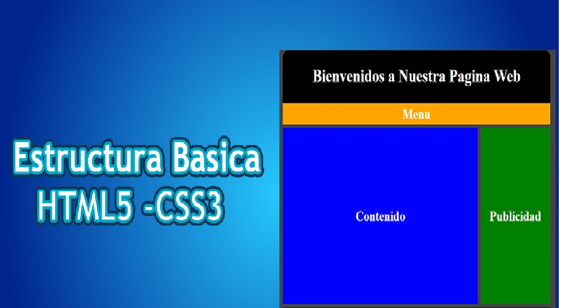
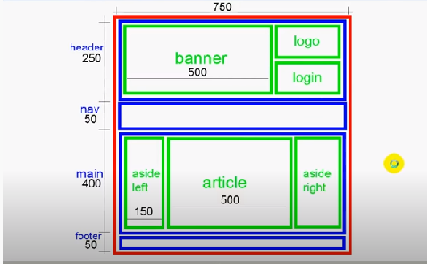

OVI DISEÑOS WEB
UNAD

LECTURAS
Lectura 3
CSS, siglas en inglés para Hoja de estilos en cascada es un lenguaje utilizado, para especificar el aspecto de una página web para diferentes dispositivos. Realmente, el HTML le dice al navegador la estructura de un documento, mientras que el CSS le dice como renderizarlo.
CSS3 añade muchas capacidades nuevas a la especificación anterior. aunque aun está en proceso de estandarizado. Los procesos que otorga CSS3 son excelentes bordes, fondos, color, textos, transformaciones, transiciones, cajas, contenido, opacidad. son elementos esencial para el diseño y su estructura para cualquier web.

1. Maquetación básica
Width: Especifica el ancho que debe tener un elemento. Height: Especifica el alto que debe tener un elemento. Margin: Especifica el espacio de separación que toma el elemento respecto a los demás. Se puede especificar por separado arriba, abajo, izquierda y derecha. Padang: Especifica un margen interno del objeto el cual aumenta su tamaño, este se puede especificar por separado arriba, abajo, izquierda y derecha.
